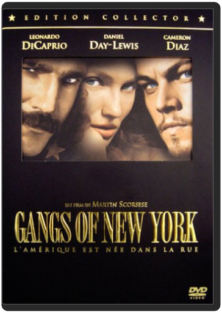
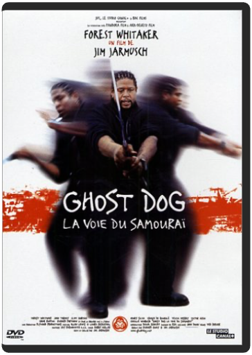
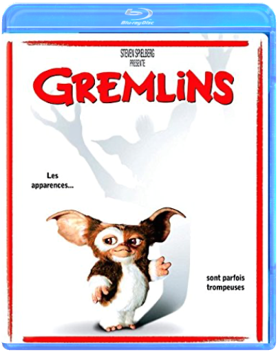
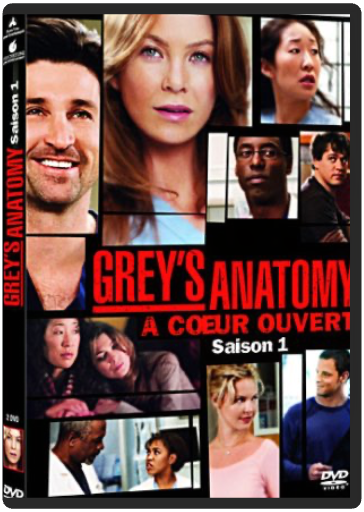

gangs of new york - édition collectormartin scorsese  L'idée d'adapter le roman historique d'Herbert J. Asbury avait germé dans l'esprit de Martin Scorsese dès 1970. En acceptant de financer le projet, Miramax met fin à plus de vingt ans d'atermoiements de production et de tournages sans cesse repoussés. Raconter Gangs of New York relève de l'entreprise périlleuse, tant les pistes narratives se croisent et s'entrechoquent. Pègre, vengeance, rédemption et identité américaine sont autant de thèmes de prédilection pour le réalisateur de Taxi Driver et des Affranchis. Sans oublier bien entendu sa ville fétiche, dans sa version XIXe siècle, le New York des bas fonds du quartier des "five points", une ville-foire dépeinte à l'hémoglobine où l'on s'étripe sans retenue; Une ville-décor d'un réalisme somptueusement cru, mais surtout une ville en recherche de son métissage culturel, terre d'accueil, entre guillemets, d'un flot d'immigrants irlandais aussitôt précipités dans une guerre de sécession interminable. Au delà de New York, c'est bel et bien un bout d'histoire de l'Amérique que Martin Scorsese, en bateleur virtuose, nous conte : une histoire bâtie sur la violence, la peur de l'autre, la corruption, la xénophobie et la politique spectacle, un mythe tout entier incarné par l'ombrageux et folklorique Bill "The Butcher", sorte d'Attila déguisé en bouffon magnifique et interprété par un Daniel Day-Lewis au sommet de son art. —Arnaud Caire ghost dogjim jarmusch Huitième réalisation de Jim Jarmusch, Ghost Dog possède le magnétisme hypnotique de son précédent film, Dead Man. En racontant les dernières heures d'un tueur black – incarné par un Forest Withaker jamais vu dans un tel état de grâce depuis Bird – poursuivi par ses anciens commanditaires mafieux, qui travaille et vit comme un samouraï, au corps lourd et massif mais filmé léger et aérien, ce film présenté au Festival de Cannes 1999 s'apparente à une variation jazzy-rap d'un bon vieux film noir. À l'image de son héros qui communique par pigeon voyageur tout en écoutant du rap – mention spéciale à la BOF de RZA, pilier du groupe rap Wu Tang Clan – sur les autoradios les plus hype, le réalisateur de Down by law filme un pied dans le passé, l'autre dans le présent le plus actuel. D'où cette tonalité drôle et mélancolique, jamais ironique. Et d'où aussi le thème récurrent de la transmission, magnifiquement symbolisé par le pigeon voyageur, mais aussi par un livre qui circule de main en main, comme un témoin entre les générations. Mélange élégant de trois figures que tout éloigne, le mafioso, le rapper et le samouraï, Ghost Dog est une superbe réussite de l'auteur de Stranger Than Paradise. —Sylvain Lefort gremlinssteven spielberg Quick Shipping !!! New And Sealed !!! This Disc WILL NOT play on standard US DVD player. A multi-region PAL/NTSC DVD player is request to view it in USA/Canada. Please Review Description. grey's anatomy, saison 1 C'est l'arrivée de nouveaux internes à l'hôpital de Seattle, réputé pour son niveau d'apprentissage particulièrement difficile et son rythme de travail effréné. Meredith Grey, fille d'un chirurgien très réputé, Izzie et Christina sont 3 futures "blouses blanches" si jamais elles parviennent à survivre aux 7 années de travail acharné, privations et stress qui les attendent, elles deviendront de grands chirurgiens. Mais la vie ne s'arrête pas le temps de leurs études : famille, amis et petits amis, tout continue ! Meredith en fait la dure expérience en prenant sa première garde : le garçon avec qui elle vient de coucher n'est autre que son supérieur hiérarchique, le docteur Derek Shepperd...  grey's anatomy, saison 6 grey's anatomy, saison 6 Meredith Grey, fille d'un chirurgien très réputé, commence son internat de première année en médecine chirurgicale dans un hôpital de Seattle. La jeune femme s'efforce de maintenir de bonnes relations avec ses camarades internes, mais dans ce métier difficile la compétition fait rage. |


 Made with Delicious Library
Made with Delicious LibraryNancy, State zipflap congrotus delicious library Thomas, Julien